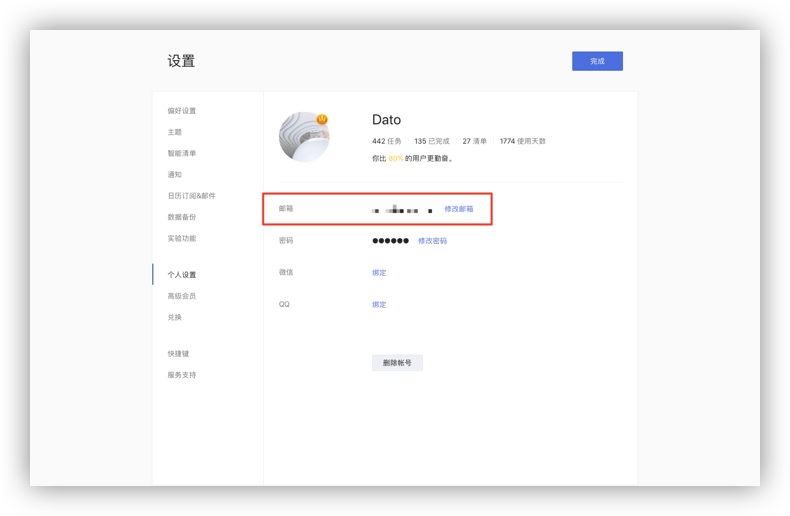
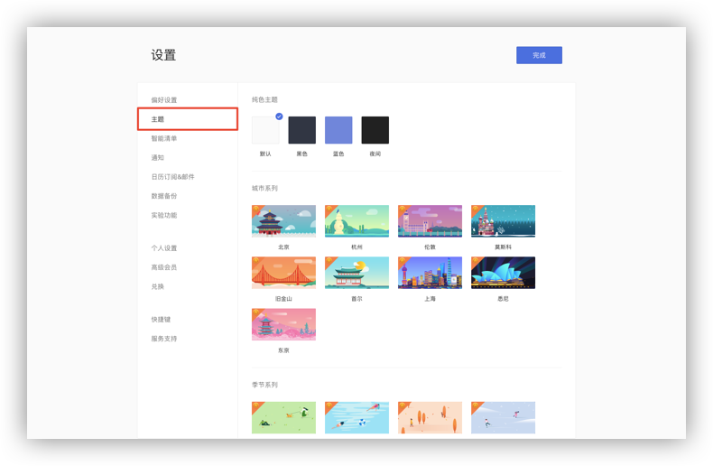

账户设置
注册和登录
若您还没有注册滴答清单账户，您可以在滴答清单创建免费账户，点击网页右上角的「创建免费账户」，即可立即创建。
若您已有滴答清单账户，可以从滴答清单登陆网页版。
进入滴答清单网站，点击右上角「登录」，即可登录到您的滴答账号。
当您成功登录后, 会看到如下这样界面：
- 左侧边栏, 您可以看到所有清单（包括智能清单、普通清单和自定义智能清单）;
- 中间是任务列表页, 显示选中清单的所有任务;
- 右侧是任务详情页，显示选中任务的详情，也可以对任务进行多种操作。
绑定账户
若您使用邮箱注册滴答清单账号，可以将滴答账号绑定您的微信。
绑定后，您就可以使用微信账号免密码登录滴答清单，也可以使用微信公众号的服务，在微信中创建和查询任务。
绑定方法：
点击左上角头像-「设置」-「个人设置」-「玩转微信公众号」，按提示绑定微信即可。
若您使用微信账号注册滴答清单，可以绑定邮箱，就能够通过邮箱创建任务。
绑定方法：点击左上角头像-「设置」-「个人设置」，点击「设置邮箱」，输入邮箱地址并点击「发送验证码」，滴答会发送验证码到要绑定的邮箱，正确输入验证码和密码即可绑定成功。

若您使用 QQ 账号或微博账号登陆滴答清单，也可以绑定您的邮箱和微信，绑定方法同上。 注：非 QQ 账号登陆的用户，无法绑定 QQ 账号。
个人设置
点击左上角头像, 选择「设置」-「个人设置」，可以对账户进行设置。
- 点击头像可以上传一个新头像，上传时可以选择缩放头像大小；
- 点击昵称可以直接输入新的昵称；
- 点击邮箱地址旁的「修改邮箱」修改邮箱地址，修改之后需要到新邮箱地址验证邮箱，若邮箱未验证，邮箱后面会显示警告图标；
- 点击密码旁的「修改密码」，即可修改密码；
- 滑动到底，点击「删除账户」即可删除账户；
注：从滴答清单删除帐户将删除所有数据,为防止误操作,会要求您输入密码进行确认。如果你忘了密码,可以先重置密码。注：删除使用微信、微博和 QQ 注册的账户时，会请您手动输入“我确认删除账户”方能继续进行操作 。 - 同时在这里，还能看到你在滴答清单上的使用情况。
偏好设置
点击左上角头像-「设置」-「偏好设置」，可以根据你的使用偏好来进行设置。
- 语言：下拉框选择语言；
- 时间格式：可以选择12小时制/24小时制；
- 每周开始于：日历中的每周开始日期，支持周日/周一/周六；
- 每日提醒时间：打开每日提醒开关后，可以自行设定每一天的提醒时间；
注 ：如果在上午9:00设置为“每日提醒时间”，所有逾期和今天任务将在上午9点提醒。 - 开启智能识别日期：打开智能识别日期开关后，将识别自然语言中的日期和时间信息并自动设置提醒。您也可以自行选择是否移除文本中的时间信息。
- 农历与节假日：可以选择是否在日历中显示农历和法定节假日调休；
- 网页提醒：可以选择在多平台同时使用时，任务提醒在网页端不提示。
- 新任务默认设置：您可以根据需要对新任务的日期、日期模式、提醒、优先级和添加到清单的位置进行默认设置，之后添加的新任务会自动带上这些默认设置。
注：智能清单“今天”、“明天”、“最近7天”、日历以及带日期的自定义智能清单不受默认日期的影响。
主题
点击左上角头像-「设置」-「主题」，滴答网页版提供了三种纯色主题，九种城市系列主题和四种季节系列主题，可以根据喜好选择主题，设置使用。 注：城市和季节主题都是高级账号功能。
